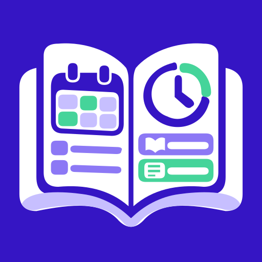

TermTidy: Study Planner
Plan semesters, classes, assignments, exams and study sessions in one place. Generate a study schedule based on available time and exam topics, use a focus timer and track study progress.
No account required. Study records are stored on your device. Internet access is required to use the app. Advertising-enabled editions use Google advertising.
Currently in testing; no public Google Play release is claimed.